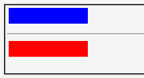
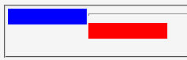

互換モードではhr要素にclearプロパティを指定しても無視されてしまい、フロートの横に回り込んでしまう。
<div style="float:left; width:100px; height:20px; background:blue; margin:1px;"></div> <hr style="clear:both;"> <div style="float:left; width:100px; height:20px; background:red; margin:1px;"></div>
hr要素がフロートの横に回りこまないようにclearプロパティを設定しています。なお、このページは互換モードで表示させています。
WinIE6.0での表示（互換モード）
Moz1.0.1での表示（互換モード）
hr要素に対して display: block; を指定することでこのバグを回避できます。ただし、この指定のためにWinIEで別のバグが発生することがあります。
<div style="float:left; width:100px; height:20px; background:blue; margin:1px;"></div> <hr style="clear:both; display:block;"> <div style="float:left; width:100px; height:20px; background:red; margin:1px;"></div>
Bugzilla-jpの関連項目です。
互換モードでhr要素はインライン要素として扱われているのでclearプロパティの指定は無効になります。一方、標準モードでhr要素はブロック要素として扱われます。以下の理由からこのような違いが設定されているそうです。
このような経緯から、互換モードではhr要素に対して以下のようなスタイルがデフォルトで設定されています（「resource:///res/quirk.css」から抜粋）。これにより互換モードでhr要素は、前後に（br要素相当の）改行が置かれたインライン要素として扱われます。
hr {
display: inline;
-moz-box-sizing: border-box;
margin: 0 0.1% 0 0.1%; /* Mmm! Hack-on-a-hack for bug 81776 */
font-size: -moz-initial !important;
}
hr:before {
white-space: pre;
content: "\A";
}
hr:after {
white-space: pre;
content: "\A";
}
詳しくはMozilla.org Bugzilla Bug 18754を参照してください。
Moz1.0.1/1.2.1の互換モードで不具合の発生が確認されました。標準モードではclearプロパティの指定どおりに表示します。